Rcourse
Rcourse.Rmd基本操作
R语言基本操作
你可以像使用计算器一样使用R：
1 / 200 * 30
#> [1] 0.15(59 + 73 + 2) / 3
#> [1] 44.666672 ^ 2
#> [1] 4sin(pi / 2)
#> [1] 1你可以创建一个变量并使用<-进行赋值
x <- 3 * 4
R语言变量命名
R语言中的变量名称必须以字母开头，并且只能包含字母，数字，下划线
_以及.为了让变量名更加有意义，往往需要多个单词，建议使用
_进行分隔或者使用驼峰命名法
i_use_snake_case otherPeopleUseCamelCase some.people.use.periods And_aFew.People_RENOUNCEconvention
- 直接在R语言中输入变量名称来使用它
x#> [1] 12数学运算符和向量
- 向量是数值的有序合集
a <- c(1:5) a
#> [1] 1 2 3 4 5b <- c(5:9) b
#> [1] 5 6 7 8 9- 如果我们要将两个向量相加并得到一个新的向量：
a + b
#> [1] 6 8 10 12 14
- R里面几乎所有的运算符的都支持向量化操作
- 如果两个向量长度不一样，会发生什么？
c(1, 3, 6, 10, 15) + c(0, 1, 3, 6)
向量化
在R语言中，向量化有几种含义：
- 运算符或者函数能够作用于向量中的每一个元素
- 当函数接收一个向量作为输入时，可以计算汇总统计
- 参数向量化
sum(1:5)
#> [1] 15median(1:5)
#> [1] 3sum(1, 2, 3, 4, 5)
#> [1] 15median(1, 2, 3, 4, 5)
#> [1] 1复杂数学运算
- 使用
?Syntax来查看R语言支持的所有运算符 - 复杂计算：
\(\int_0^{\infty}\frac{1}{(x + 1)\sqrt{x}}dx\)
#> 3.141593 with absolute error < 2.7e-05特殊数字
R语言支持四种特殊值：-Inf(负无穷), Inf(正无穷), NaN(非数字, Not A Number), NA (缺失值, Not Available)
c(Inf + 1, Inf - 1, Inf - Inf)
#> [1] Inf Inf NaNc(1 / Inf, Inf / 1, Inf / Inf)
#> [1] 0 Inf NaN#> Warning in sin(Inf): NaNs produced#> [1] Inf NaNc(NA + 1, NA * 5, NA + Inf)
#> [1] NA NA NA同时，R语言也提供了4个函数来检查这些特殊值：
#> [1] TRUE FALSE FALSE FALSEis.infinite(c(0, Inf, NA, NaN))
#> [1] FALSE TRUE FALSE FALSE#> [1] FALSE FALSE TRUE TRUE#> [1] FALSE FALSE FALSE TRUE逻辑向量
R里面有三种逻辑状态：TRUE(T)、FALSE(F)、NA
同时R也提供了三个向量化的逻辑运算符：
x <- c(T, F, NA) xy <- expand.grid(x = x, y = x) within( xy, { and <- x & y or <- x | y not.y <- !y not.x <- !x } )
#> x y not.x not.y or and
#> 1 TRUE TRUE FALSE FALSE TRUE TRUE
#> 2 FALSE TRUE TRUE FALSE TRUE FALSE
#> 3 NA TRUE NA FALSE TRUE NA
#> 4 TRUE FALSE FALSE TRUE TRUE FALSE
#> 5 FALSE FALSE TRUE TRUE FALSE FALSE
#> 6 NA FALSE NA TRUE NA FALSE
#> 7 TRUE NA FALSE NA TRUE NA
#> 8 FALSE NA TRUE NA NA FALSE
#> 9 NA NA NA NA NA NA数值判断
# Compare numbers (==, >=, !=, <=, <, >) # ?comprison sqrt(2) ^ 2 == 2 # T or F?
#> [1] FALSE#> [1] TRUE#> [1] FALSE比较数字是否相同，不要使用==，使用all.equal函数。
R语言数据类型
数据类型种类
R中所有的变量都有一个类，表明此变量属于什么类型。 在R中，最小的数据类型是原子向量（Atomic）
#> [1] "array" "atomic" "call" "character"
#> [5] "complex" "Coord" "data" "Date"
#> [9] "difftime" "double" "duration" "element"
#> [13] "empty" "environment" "expression" "facet"
#> [17] "factor" "finite" "function" "ggplot"
#> [21] "ggproto" "grouped_df" "infinite" "instant"
#> [25] "integer" "interval" "language" "leaf"
#> [29] "list" "loaded" "logical" "matrix"
#> [33] "mts" "na" "name" "nan"
#> [37] "null" "numeric" "numeric_version" "object"
#> [41] "ordered" "package_version" "pairlist" "period"
#> [45] "POSIXct" "POSIXlt" "POSIXt" "primitive"
#> [49] "qr" "R" "raster" "raw"
#> [53] "recursive" "relistable" "single" "src"
#> [57] "stepfun" "symbol" "table" "tbl"
#> [61] "theme" "tibble" "timepoint" "timespan"
#> [65] "ts" "tskernel" "unsorted" "vector"数据类型判断
R里面也提供了大量的函数来判断数据类型。
#> [1] "is.array" "is.atomic"
#> [3] "is.call" "is.character"
#> [5] "is.complex" "is.Coord"
#> [7] "is.data.frame" "is.Date"
#> [9] "is.difftime" "is.double"
#> [11] "is.duration" "is.element"
#> [13] "is.empty.model" "is.environment"
#> [15] "is.expression" "is.facet"
#> [17] "is.factor" "is.finite"
#> [19] "is.function" "is.ggplot"
#> [21] "is.ggproto" "is.grouped_df"
#> [23] "is.infinite" "is.instant"
#> [25] "is.integer" "is.interval"
#> [27] "is.language" "is.leaf"
#> [29] "is.list" "is.loaded"
#> [31] "is.logical" "is.matrix"
#> [33] "is.mts" "is.na"
#> [35] "is.na.data.frame" "is.na.numeric_version"
#> [37] "is.na.POSIXlt" "is.na<-"
#> [39] "is.na<-.default" "is.na<-.factor"
#> [41] "is.na<-.numeric_version" "is.name"
#> [43] "is.nan" "is.null"
#> [45] "is.numeric" "is.numeric.Date"
#> [47] "is.numeric.difftime" "is.numeric.POSIXt"
#> [49] "is.numeric_version" "is.object"类型转换
R里面提供了很多的函数来进行数据类型的转换。
#> [1] "as.array" "as.array.default"
#> [3] "as.call" "as.character"
#> [5] "as.character.condition" "as.character.Date"
#> [7] "as.character.default" "as.character.error"
#> [9] "as.character.factor" "as.character.hexmode"
#> [11] "as.character.numeric_version" "as.character.octmode"
#> [13] "as.character.POSIXt" "as.character.srcref"
#> [15] "as.col_spec" "as.complex"
#> [17] "as.data.frame" "as.data.frame.array"
#> [19] "as.data.frame.AsIs" "as.data.frame.character"
#> [21] "as.data.frame.complex" "as.data.frame.data.frame"
#> [23] "as.data.frame.Date" "as.data.frame.default"
#> [25] "as.data.frame.difftime" "as.data.frame.factor"
#> [27] "as.data.frame.integer" "as.data.frame.list"
#> [29] "as.data.frame.logical" "as.data.frame.matrix"
#> [31] "as.data.frame.model.matrix" "as.data.frame.noquote"
#> [33] "as.data.frame.numeric" "as.data.frame.numeric_version"
#> [35] "as.data.frame.ordered" "as.data.frame.POSIXct"
#> [37] "as.data.frame.POSIXlt" "as.data.frame.raw"
#> [39] "as.data.frame.table" "as.data.frame.ts"
#> [41] "as.data.frame.vector" "as.Date"
#> [43] "as.Date.character" "as.Date.default"
#> [45] "as.Date.factor" "as.Date.numeric"
#> [47] "as.Date.POSIXct" "as.Date.POSIXlt"
#> [49] "as.dendrogram" "as.difftime"几种重要的数据类型
R语言数据结构
数据结构分类
R语言有5种基本的数据结构，分别是：向量（vector）、矩阵（matrix）、 数组（array）、列表（list）和数据框（data.frame）
knitr::include_graphics('./Figures/data_type.jpg')
数据类型
向量
向量的定义
a <- c(1, 2, 5, 3, 6, -2, 4) # numeric vector b <- c("one", "two", "three") # character vector c <- c(TRUE, TRUE, TRUE) # logical vector
- 原子向量中的数据必须是相同的类型(数值型、字符型或逻辑型)。
向量强制转换
- 当把不同类型的数据结合成一个向量时，它们会被强制转换（coerce）成灵活的类型
- 数据类型灵活性由低到高的排序为：
logical<integer<double<character - 逻辑性变量强制转换时，
TRUE变成1，FALSE变成0。配合sum()和mean()使用
#> [1] 1mean(x) # Propotion that are TURE
#> [1] 0.3333333创建重复的向量
rep(2:5, 2) # rep(2:5, times = 2)
#> [1] 2 3 4 5 2 3 4 5rep(1:3, times = 4, each = 2)
#> [1] 1 1 2 2 3 3 1 1 2 2 3 3 1 1 2 2 3 3 1 1 2 2 3 3paste('x', 1:5, sep = '_')
#> [1] "x_1" "x_2" "x_3" "x_4" "x_5"向量的基本操作
a <- 1:10 a[c(1, 3, 5)] # 1st, 3rd and 5th elements in a
#> [1] 1 3 5a[a > 3] # list all the elements larger than 3 in a
#> [1] 4 5 6 7 8 9 10a[-c(1:3)] # eliminate the first 3 elements in a
#> [1] 4 5 6 7 8 9 10a * a # element-wise manipulation
#> [1] 1 4 9 16 25 36 49 64 81 100length(a) # the length of the vector
#> [1] 10b <- c(apple = 1, banana = 2, 'kiwi fruit' = 3, 4) b
#> apple banana kiwi fruit
#> 1 2 3 4矩阵（matrix）
列表
通用列表（list）
- R数据类型中最为复杂的一种数据结构。
- 列表就是包含任何类型的对象，可以是若干向量、矩阵、数据框，甚至其他列表的组合。
- 可以通过
list()来创建
char_obj <- "My First List" vec_obj <- c(25, 26, 18, 39) mat_obj <- matrix(1:10, nrow = 5) my_list <- list(char_obj, vec_obj, mat_obj) my_list[[1]] # first element in a list
#> [1] "My First List"数据框（data.frame/data.table）
mydata <- data.frame(patientID = c(1, 2, 3, 4), age = c(25, 34, 28, 52), diabetes = c("Type1", "Type2","Type1","Type1"), status = c("Poor", "Improved", "Excellent", "Poor") ) head(mydata, 3)
#> patientID age diabetes status
#> 1 1 25 Type1 Poor
#> 2 2 34 Type2 Improved
#> 3 3 28 Type1 Excellent数据库里的不同列的数据长度须一致，相同列的数据类型须一致
R语言原生的data.table处理规模较大的数据时速度较慢，可以用data.table代替。后续课程会详细介绍。
在R语言中使用函数
函数调用
R语言中有大量的内置函数，同时也有大量的第三方程序包提供的函数，他们调用的方式都相同：
function_name(arg1 = val1, arg2 = val2, ...)
我们尝试使用seq()来生成1到10的一个向量。
x <- seq(1, 10) x
#> [1] 1 2 3 4 5 6 7 8 9 10循环和其他控制流程 （Control Flow）
- 语法
使用?Control来查看R支持的控制流程
for(var in seq) expr while(cond) expr repeat expr
for (i in 1:5) { print(i) }
#> [1] 1
#> [1] 2
#> [1] 3
#> [1] 4
#> [1] 5
循环的替代品-*apply函数
#> [,1] [,2] [,3] [,4] [,5] [,6]
#> [1,] 0.2749674 1.2878665 0.2811292 0.76608012 0.8747734 0.8599862
#> [2,] 0.4924358 0.3748701 0.5011292 -1.48520899 0.1770602 -0.6521319
#> [3,] -1.5377420 -0.2418424 1.3489986 0.05596908 -0.0149037 1.5975910#> [1] -0.2567796
#> [1] 0.4736314
#> [1] 0.710419
#> [1] -0.2210533
#> [1] 0.3456433
#> [1] 0.6018151apply(A, 2, mean)
#> [1] -0.2567796 0.4736314 0.7104190 -0.2210533 0.3456433 0.6018151- 用
??apply查看所有apply函数


数据挖掘
简单数据探索
#> Min. 1st Qu. Median Mean 3rd Qu. Max.
#> -2.4873 -0.8580 -0.2078 -0.2038 0.4283 2.4251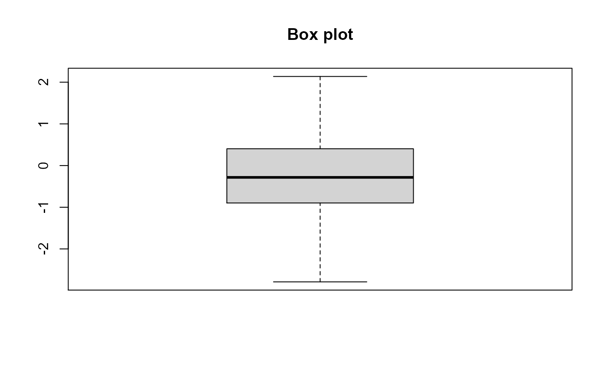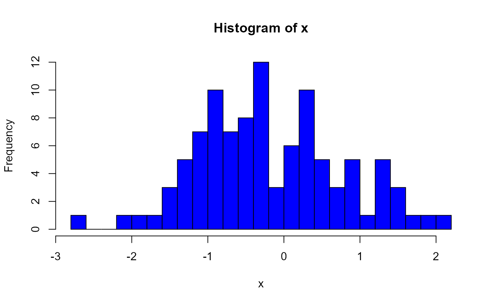
简单的统计分析
library(data.table) set.seed(12345) random_dt <- data.table(weight = round(c(rnorm(10, 0, 1), rnorm(10, 2, 1)), 3), group = rep(c('ctrl', 'case'), each = 10)) t.test(weight ~ group, random_dt)
#>
#> Welch Two Sample t-test
#>
#> data: weight by group
#> t = 6.5335, df = 17.979, p-value = 3.873e-06
#> alternative hypothesis: true difference in means is not equal to 0
#> 95 percent confidence interval:
#> 1.640945 3.196655
#> sample estimates:
#> mean in group case mean in group ctrl
#> 2.2860 -0.1328函数（Function）
为什么要使用函数
- 避免复制（do not repeat yourself）
df <- tibble::tibble( a = rnorm(10), b = rnorm(10), c = rnorm(10), d = rnorm(10) ) df$a <- (df$a - min(df$a, na.rm = TRUE)) / (max(df$a, na.rm = TRUE) - min(df$a, na.rm = TRUE)) df$b <- (df$b - min(df$b, na.rm = TRUE)) / (max(df$b, na.rm = TRUE) - min(df$a, na.rm = TRUE)) df$c <- (df$c - min(df$c, na.rm = TRUE)) / (max(df$c, na.rm = TRUE) - min(df$c, na.rm = TRUE)) df$d <- (df$d - min(df$d, na.rm = TRUE)) / (max(df$d, na.rm = TRUE) - min(df$d, na.rm = TRUE))
- 以上代码的作用是将
df里的每一列标准化到0和1之间 - 但是复制的时候出错了（
df$b） - 如何有效避免此类问题？
将重复的工作转化为函数
- 观察以下代码
- 我们需要几个参数？
- 还能不能再做精简？（毕竟我们计算了3次最大最小值）
rescale01 <- function(x) { rng <- range(x, na.rm = TRUE) (x - rng[1]) / (rng[2] - rng[1]) } rescale01(c(0, 5, 10))
#> [1] 0.0 0.5 1.0创建函数
- 选择一个合适的函数名（往往这个是最难的）
- 在
function()里填入你的参数名（同样要取一个合适的名字） - 在函数体中填入你的代码（
function(...){}） - 可以先将流程写好，然后将代码转换成函数
- 写完函数后，对不同参数进行测试！
rescale01(c(-10, 0, 10))
#> [1] 0.0 0.5 1.0rescale01(c(1, 2, 3, NA, 5))
#> [1] 0.00 0.25 0.50 NA 1.00使用函数
再回到我们原来的问题，我们现在可以对每一列使用函数
df$a <- rescale01(df$a) df$b <- rescale01(df$b) df$c <- rescale01(df$c) df$d <- rescale01(df$d)
同时，如果要修改代码，我们只需在函数体中修改一处即可。
- 有效避免了复制粘贴的错误
- 这样就完美了吗?
函数命名
- 函数尽量使用动词
- 可以使用
_来连接多个单词，或者使用驼峰命名法，但是尽可能保持一致 - 多用注释！(Ctrl+shift+R)
# Good input_select() input_checkbox() input_text() impute_missing() collapse_years() # Don't do this! T <- FALSE c <- 10 mean <- function(x) sum(x) # Never do this! col_mins <- function(x, y) {} rowMaxes <- function(y, x) {}
特殊函数
分支函数
- 使用
if语句来构建函数分支
if (condition) { # code executed when condition is TRUE } else { # code executed when condition is FALSE }
- 使用
if-else或者switch构建多分支
分支函数练习
- 编写一个名为
has_name的函数，接收一个向量作为参数，返回这个向量中每个元素是否有名称。
#> [1] TRUE TRUE FALSE TRUE TRUE-
if和ifelse的区别是啥，请举例说明 - 用
cut改写以下函数
if (temp <= 0) { "freezing" } else if (temp <= 10) { "cold" } else if (temp <= 20) { "cool" } else if (temp <= 30) { "warm" } else { "hot" }
Dot-dot-dot (…)
-用...传递任意参数
commas <- function(...) stringr::str_c(..., collapse = ", ") commas(letters[1:10])
#> [1] "a, b, c, d, e, f, g, h, i, j"rule <- function(..., pad = "-") { title <- paste0(...) width <- getOption("width") - nchar(title) - 5 cat(title, " ", stringr::str_dup(pad, width), "\n", sep = "") } rule("Important output")
#> Important output -----------------------------------------------------------返回值
函数返回值
显式返回值和隐式返回值
R默认会隐式返回你函数体中最后一步运算表达式的结果（不需要显示调用
return()）如果要提前返回值，则应该考虑2点：
提早返回值会使你的代码更加清晰吗？
你的函数是否可以使用管道运算符？
迭代（Iteration）
迭代用途
- 考虑下面的例子：
library(tibble) set.seed(1234) df <- tibble( a = rnorm(10), b = rnorm(10), c = rnorm(10), d = rnorm(10) ) median(df$a)
#> [1] -0.5555419median(df$b)
#> [1] -0.4941011median(df$c)
#> [1] -0.4656169median(df$d)
#> [1] -0.605349- 如何用循环做？
For循环
- 考虑下面的例子：
set.seed(1234) df <- tibble( a = rnorm(10), b = rnorm(10), c = rnorm(10), d = rnorm(10) ) median(df$a)
#> [1] -0.5555419median(df$b)
#> [1] -0.4941011median(df$c)
#> [1] -0.4656169median(df$d)
#> [1] -0.605349output <- vector("double", ncol(df)) # 1. output for (i in seq_along(df)) { # 2. sequence output[[i]] <- median(df[[i]]) # 3. body } output
#> [1] -0.5555419 -0.4941011 -0.4656169 -0.6053490For循环和函数
- 考虑以下代码：
col_median <- function(df) { output <- vector("double", length(df)) for (i in seq_along(df)) { output[i] <- median(df[[i]]) } output } col_sd <- function(df) { output <- vector("double", length(df)) for (i in seq_along(df)) { output[i] <- sd(df[[i]]) } output }
- 有更简单的方法吗？
- 如果我还要做col_mean怎么办？
- 增加一个参数来传递函数
purrr
主要函数（map）
-
map()，返回list -
map_lgl()，返回逻辑向量 -
map_dfr()，返回数据框 -
map_int()，返回整数向量 -
map_dbl()，返回浮点型向量 -
map_chr()，返回字符向量
map代替for循环
set.seed(1234) df <- tibble( a = rnorm(10), b = rnorm(10), c = rnorm(10), d = rnorm(10) ) map_dbl(df, mean, na.rm = T)
#> a b c d
#> -0.3831574 -0.1181707 -0.3879468 -0.7661931map_dbl(df, median)
#> a b c d
#> -0.5555419 -0.4941011 -0.4656169 -0.6053490案例分析
- 下面展示一个真实的数据处理流程
- 数据来自Google BigQuery
- 数据为美国1995-2004年全国的新生儿数据
- 数据共有39928601行
- 数据展示：
#> Rows: 39,928,601
#> Columns: 4
#> $ state <chr> "AK", "AK", "AK", "AK", "AK", "AK", "AK", "AK", "AK", "AK...
#> $ year <int> 1995, 1995, 1995, 1995, 1995, 1995, 1995, 1995, 1995, 199...
#> $ month <int> 1, 1, 1, 1, 1, 1, 1, 1, 1, 1, 1, 1, 1, 1, 1, 1, 1, 1, 1, ...
#> $ plurality <int> 1, 1, 1, 1, 1, 1, 1, 1, 1, 1, 1, 1, 1, 1, 1, 1, 1, 1, 1, ...- 目标：
- 计算多胞胎的出生率（plurality > 1）
- 分析其出生率的季节和年度变化
- 统计其出生率的年际趋势
- 由于数据量较大，可以分年进行处理，使用
split()函数 - 使用
map_dfr()对每个分块进行处理
数据导入

导入数据的包
| Packages | 数据类型 |
|---|---|
| readr | 文本的数据（.txt, .csv） |
| data.table | 文本的数据（.txt, .csv） |
| haven | SPSS、Stata以及SAS文件 |
| readxl | Excel文件（.xls & .xlsx） |
| DBI | 数据库 |
| jsonlite | json文件 |
| xmls2 | XML文件 |
| httr | 网络接口 |
| rvest | 网络爬虫 |
| R.matlab | matlab文件（.mat） |
| sf | 矢量数据 |
| raster | 栅格数据 |
| ncdf4 | netCDF数据（.nc） |
readr
- 使用
read_*()读取文本数据
read_*(file, col_names = TRUE, col_types = NULL, locale = default_locale(),
na = c("", "NA"), quoted_na = TRUE, comment = "", trim_ws = TRUE,
skip = 0, n_max = Inf, guess_max = min(1000,n_max), progress = interactive())
数据保存
-
x是一个R里面的对象 -
path是一个路径 - 将
x保存到path中
# Comma delimited file write_csv(x, path, na = "NA", append = FALSE, col_names = !append) # File with arbitrary delimiter write_delim(x, path, delim = " ", na = "NA", append = FALSE, col_names = !append) # CSV for excel write_excel_csv(x, path, na = "NA", append = FALSE, col_names = !append) # String to file write_file(x, path, append = FALSE) # String vector to file, one element per line write_lines(x,path, na = "NA", append = FALSE) # Object to RDS file write_rds(x, path, compress = c("none", "gz", "bz2", "xz"), ...) # Tab delimited files write_tsv(x, path, na = "NA", append = FALSE, col_names = !append)
数据清理
数据结构 （Data structure）
绝大多数统计分析的数据集是由行和列构成。
preg <- read.csv("./Data/preg.csv", stringsAsFactors = FALSE) preg
#> name treatmenta treatmentb
#> 1 John Smith NA 18
#> 2 Jane Doe 4 1
#> 3 Mary Johnson 6 7但是，同一种数据的存储方式有好多种。
read.csv("./Data/preg2.csv", stringsAsFactors = FALSE)
#> treatment John.Smith Jane.Doe Mary.Johnson
#> 1 a NA 4 6
#> 2 b 18 1 7什么是数据清理
Tidy data is a standard way of mapping the meaning of a dataset to its structure. A dataset is messy or tidy depending on how rows, columns and tables are matched up with observations, variables and types.– Hadley (2014)
- 数据处理的一部分
- 使数据便于被建模、可视化以及分析（比如：能够很好服务于
lm、ggplot以及ddply） - 变量为一列、观测值为一行
使用tidy data的好处：
- 便于提取数据
- 便于向量化的语言进行操作
数据语义 （Data semantics）
- 一个数据集是数值（value）的合集。通常为数字（连续）或者字符（离散）
- 每一个数值应该有2个属性：变量（variable）和观测（observation）
- 每一个变量包含同一属性的所有时间的数值（高度、温度、长度）
- 每次观测包含同一时间所有属性的数值
满足以上条件的数据集可以认为是整齐的数据（tidy version） 
例子
- 之前我们看到的数据的可以变形为：（不用关注函数本身）
#> name treatmenta treatmentb
#> 1 John Smith NA 18
#> 2 Jane Doe 4 1
#> 3 Mary Johnson 6 7preg %>% pivot_longer(where(is.numeric), names_to = 'treatment', values_to = 'n') %>% mutate(treatment = str_replace_all(treatment, "treatment", "")) %>% arrange(name, treatment)
#> # A tibble: 6 x 3
#> name treatment n
#> <chr> <chr> <int>
#> 1 Jane Doe a 4
#> 2 Jane Doe b 1
#> 3 John Smith a NA
#> 4 John Smith b 18
#> 5 Mary Johnson a 6
#> 6 Mary Johnson b 7列名是数值，而不是变量名
数据
Income Distribution within U.S. religious groups http://pewforum.org/Income-Distribution-Within-US-Religious-Groups.aspx
#> religion <$10k $10-20k $20-30k $30-40k $40-50k $50-75k $75-100k $100-150k
#> 1 Agnostic 27 34 60 81 76 137 122 109
#> 2 Atheist 12 27 37 52 35 70 73 59
#> 3 Buddhist 27 21 30 34 33 58 62 39
#> >150k Don't know/refused
#> 1 84 96
#> 2 74 76
#> 3 53 54- 这个数据集中有多少个变量？
- 大家可以讨论一下

pivot_longer
- 解决这个问题很简单，我们可以使用
tidyr::pivot_longer()来进行处理
pew %>% pivot_longer(cols = where(is.numeric), values_to = 'n', names_to = 'income')
#> # A tibble: 180 x 3
#> religion income n
#> <chr> <chr> <int>
#> 1 Agnostic <$10k 27
#> 2 Agnostic $10-20k 34
#> 3 Agnostic $20-30k 60
#> 4 Agnostic $30-40k 81
#> 5 Agnostic $40-50k 76
#> 6 Agnostic $50-75k 137
#> 7 Agnostic $75-100k 122
#> 8 Agnostic $100-150k 109
#> 9 Agnostic >150k 84
#> 10 Agnostic Don't know/refused 96
#> # ... with 170 more rows多种类型的变量存储在同一列中
数据
Number of cases of tuberculosis observed in a WHO study
#> iso2 year m04 m514 m014 m1524 m2534 m3544 m4554 m5564 m65 mu f04 f514 f014
#> 1 AD 1989 NA NA NA NA NA NA NA NA NA NA NA NA NA
#> 2 AD 1990 NA NA NA NA NA NA NA NA NA NA NA NA NA
#> 3 AD 1991 NA NA NA NA NA NA NA NA NA NA NA NA NA
#> f1524 f2534 f3544 f4554 f5564 f65 fu
#> 1 NA NA NA NA NA NA NA
#> 2 NA NA NA NA NA NA NA
#> 3 NA NA NA NA NA NA NA- 这个数据集中有多少个变量？
- 大家可以讨论一下
- Hint: f = female, u = unknown, 1524 = 15-24
- 同时思考一下怎么将年龄和性别分开（
stringr::str_sub）
pivot_longer
和上一个数据集一样，使用tidyr::pivot_longer()函数，将所有的变量变成列。
tb %>% pivot_longer(cols = m04:fu, names_to = 'sexage', values_to = 'cases')
#> # A tibble: 115,380 x 4
#> iso2 year sexage cases
#> <chr> <int> <chr> <int>
#> 1 AD 1989 m04 NA
#> 2 AD 1989 m514 NA
#> 3 AD 1989 m014 NA
#> 4 AD 1989 m1524 NA
#> 5 AD 1989 m2534 NA
#> 6 AD 1989 m3544 NA
#> 7 AD 1989 m4554 NA
#> 8 AD 1989 m5564 NA
#> 9 AD 1989 m65 NA
#> 10 AD 1989 mu NA
#> # ... with 115,370 more rowsstringr::str_sub
#> # A tibble: 5 x 4
#> iso2 year sexage cases
#> <chr> <int> <chr> <int>
#> 1 AD 1989 m04 NA
#> 2 AD 1989 m514 NA
#> 3 AD 1989 m014 NA
#> 4 AD 1989 m1524 NA
#> 5 AD 1989 m2534 NA性别年龄怎么办？
用这个函数试一试：stringr::str_sub
ages <- c("04" = "0-4", "514" = "5-14", "014" = "0-14", "1524" = "15-24", "2534" = "25-34", "3544" = "35-44", "4554" = "45-54", "5564" = "55-64", "65"="65+", "u" = NA) tb %>% pivot_longer(cols = m04:fu, names_to = 'sexage', values_to = 'cases') %>% mutate(sex = str_sub(sexage, 1, 1), age = factor(ages[str_sub(sexage, 2)], levels = ages), sexage = NULL) %>% head(5)
#> # A tibble: 5 x 5
#> iso2 year cases sex age
#> <chr> <int> <int> <chr> <fct>
#> 1 AD 1989 NA m 0-4
#> 2 AD 1989 NA m 5-14
#> 3 AD 1989 NA m 0-14
#> 4 AD 1989 NA m 15-24
#> 5 AD 1989 NA m 25-34变量同时储存在行和列中
数据
Daily temperatures in Cuernavaca, Mexico for 2010
#> id year month element d1 d2 d3 d4 d5 d6 d7 d8 d9 d10 d11 d12 d13
#> 1 MX17004 2010 1 tmax NA NA NA NA NA NA NA NA NA NA NA NA NA
#> 2 MX17004 2010 1 tmin NA NA NA NA NA NA NA NA NA NA NA NA NA
#> 3 MX17004 2010 2 tmax NA 27.3 24.1 NA NA NA NA NA NA NA 29.7 NA NA
#> d14 d15 d16 d17 d18 d19 d20 d21 d22 d23 d24 d25 d26 d27 d28 d29 d30 d31
#> 1 NA NA NA NA NA NA NA NA NA NA NA NA NA NA NA NA 27.8 NA
#> 2 NA NA NA NA NA NA NA NA NA NA NA NA NA NA NA NA 14.5 NA
#> 3 NA NA NA NA NA NA NA NA NA 29.9 NA NA NA NA NA NA NA NA- 这个数据集中有多少个变量？
- 大家可以讨论一下
- Hint: TMIN = minimum temperature, id = weather station identifier
- 继续使用
tidyr::pivot_longer()函数
pivot_longer
weather %>% pivot_longer(cols = d1:d31, values_to = 'value', names_to = 'day')
#> # A tibble: 682 x 6
#> id year month element day value
#> <chr> <int> <int> <chr> <chr> <dbl>
#> 1 MX17004 2010 1 tmax d1 NA
#> 2 MX17004 2010 1 tmax d2 NA
#> 3 MX17004 2010 1 tmax d3 NA
#> 4 MX17004 2010 1 tmax d4 NA
#> 5 MX17004 2010 1 tmax d5 NA
#> 6 MX17004 2010 1 tmax d6 NA
#> 7 MX17004 2010 1 tmax d7 NA
#> 8 MX17004 2010 1 tmax d8 NA
#> 9 MX17004 2010 1 tmax d9 NA
#> 10 MX17004 2010 1 tmax d10 NA
#> # ... with 672 more rowsstringr::str_replace()
这样就结束了吗？
其实可以变得更好的。
day应该是数字；tmax，tmin应该分为2列
使用
stringr::str_replace()将day变为数字
weather %>% pivot_longer(cols = d1:d31, values_to = 'value', names_to = 'day') %>% mutate(day = as.integer(str_replace(day, 'd', '')))
#> # A tibble: 682 x 6
#> id year month element day value
#> <chr> <int> <int> <chr> <int> <dbl>
#> 1 MX17004 2010 1 tmax 1 NA
#> 2 MX17004 2010 1 tmax 2 NA
#> 3 MX17004 2010 1 tmax 3 NA
#> 4 MX17004 2010 1 tmax 4 NA
#> 5 MX17004 2010 1 tmax 5 NA
#> 6 MX17004 2010 1 tmax 6 NA
#> 7 MX17004 2010 1 tmax 7 NA
#> 8 MX17004 2010 1 tmax 8 NA
#> 9 MX17004 2010 1 tmax 9 NA
#> 10 MX17004 2010 1 tmax 10 NA
#> # ... with 672 more rows变量同时储存在行和列中

pivot_wider
回到刚才的weather数据集，如何将tmax和tmin分为两列呢？
weather %>% pivot_longer(cols = d1:d31, values_to = 'value', names_to = 'day') %>% mutate(day = as.integer(str_replace(day, 'd', ''))) %>% pivot_wider(names_from = element, values_from = value)
#> # A tibble: 341 x 6
#> id year month day tmax tmin
#> <chr> <int> <int> <int> <dbl> <dbl>
#> 1 MX17004 2010 1 1 NA NA
#> 2 MX17004 2010 1 2 NA NA
#> 3 MX17004 2010 1 3 NA NA
#> 4 MX17004 2010 1 4 NA NA
#> 5 MX17004 2010 1 5 NA NA
#> 6 MX17004 2010 1 6 NA NA
#> 7 MX17004 2010 1 7 NA NA
#> 8 MX17004 2010 1 8 NA NA
#> 9 MX17004 2010 1 9 NA NA
#> 10 MX17004 2010 1 10 NA NA
#> # ... with 331 more rows多种类型的数据存储在一张数据表中
数据
#> year artist track time date.entered wk1 wk2 wk3 wk4
#> 1 2000 2 Pac Baby Don't Cry (Keep... 4:22 2000-02-26 87 82 72 77
#> 2 2000 2Ge+her The Hardest Part Of ... 3:15 2000-09-02 91 87 92 NA
#> 3 2000 3 Doors Down Kryptonite 3:53 2000-04-08 81 70 68 67
#> wk5 wk6 wk7 wk8 wk9 wk10 wk11 wk12 wk13 wk14 wk15 wk16 wk17 wk18 wk19 wk20
#> 1 87 94 99 NA NA NA NA NA NA NA NA NA NA NA NA NA
#> 2 NA NA NA NA NA NA NA NA NA NA NA NA NA NA NA NA
#> 3 66 57 54 53 51 51 51 51 47 44 38 28 22 18 18 14
#> wk21 wk22 wk23 wk24 wk25 wk26 wk27 wk28 wk29 wk30 wk31 wk32 wk33 wk34 wk35
#> 1 NA NA NA NA NA NA NA NA NA NA NA NA NA NA NA
#> 2 NA NA NA NA NA NA NA NA NA NA NA NA NA NA NA
#> 3 12 7 6 6 6 5 5 4 4 4 4 3 3 3 4
#> wk36 wk37 wk38 wk39 wk40 wk41 wk42 wk43 wk44 wk45 wk46 wk47 wk48 wk49 wk50
#> 1 NA NA NA NA NA NA NA NA NA NA NA NA NA NA NA
#> 2 NA NA NA NA NA NA NA NA NA NA NA NA NA NA NA
#> 3 5 5 9 9 15 14 13 14 16 17 21 22 24 28 33
#> wk51 wk52 wk53 wk54 wk55 wk56 wk57 wk58 wk59 wk60 wk61 wk62 wk63 wk64 wk65
#> 1 NA NA NA NA NA NA NA NA NA NA NA NA NA NA NA
#> 2 NA NA NA NA NA NA NA NA NA NA NA NA NA NA NA
#> 3 42 42 49 NA NA NA NA NA NA NA NA NA NA NA NA
#> wk66 wk67 wk68 wk69 wk70 wk71 wk72 wk73 wk74 wk75 wk76
#> 1 NA NA NA NA NA NA NA NA NA NA NA
#> 2 NA NA NA NA NA NA NA NA NA NA NA
#> 3 NA NA NA NA NA NA NA NA NA NA NA处理思路
- 将数据转换成Long-format
- 处理week数据，转换成数字
- 处理time数据，转换成秒
#> # A tibble: 24,092 x 7
#> year artist track date.entered rank date duartion
#> <int> <chr> <chr> <chr> <int> <date> <Duration>
#> 1 2000 2 Pac Baby Don't C~ 2000-02-26 87 2000-02-26 262s (~4.37 minutes)
#> 2 2000 2 Pac Baby Don't C~ 2000-02-26 82 2000-03-04 262s (~4.37 minutes)
#> 3 2000 2 Pac Baby Don't C~ 2000-02-26 72 2000-03-11 262s (~4.37 minutes)
#> 4 2000 2 Pac Baby Don't C~ 2000-02-26 77 2000-03-18 262s (~4.37 minutes)
#> 5 2000 2 Pac Baby Don't C~ 2000-02-26 87 2000-03-25 262s (~4.37 minutes)
#> 6 2000 2 Pac Baby Don't C~ 2000-02-26 94 2000-04-01 262s (~4.37 minutes)
#> 7 2000 2 Pac Baby Don't C~ 2000-02-26 99 2000-04-08 262s (~4.37 minutes)
#> 8 2000 2 Pac Baby Don't C~ 2000-02-26 NA 2000-04-15 262s (~4.37 minutes)
#> 9 2000 2 Pac Baby Don't C~ 2000-02-26 NA 2000-04-22 262s (~4.37 minutes)
#> 10 2000 2 Pac Baby Don't C~ 2000-02-26 NA 2000-04-29 262s (~4.37 minutes)
#> # ... with 24,082 more rows处理过程
billboard %>% pivot_longer(starts_with('wk'), values_to = 'rank', names_to = 'week') %>% mutate( # fix week date = dweeks(as.integer(str_replace(week, 'wk', '')) - 1) + ymd(date.entered), week = NULL, # fix time duartion = as.duration(hms(paste0('0:', time))), time = NULL)
关联数据（Relational Data）

Mutating joins
数据
为了展示方便，我们采用一个小一点的子集
我们要将航空公司的全名加到flights2数据集上
#> # A tibble: 5 x 7
#> year month day hour tailnum carrier name
#> <int> <int> <int> <dbl> <chr> <chr> <chr>
#> 1 2013 1 1 5 N14228 UA United Air Lines Inc.
#> 2 2013 1 1 5 N24211 UA United Air Lines Inc.
#> 3 2013 1 1 5 N619AA AA American Airlines Inc.
#> 4 2013 1 1 5 N804JB B6 JetBlue Airways
#> 5 2013 1 1 6 N668DN DL Delta Air Lines Inc.理解数据合并

#> # A tibble: 3 x 2
#> key val_x
#> <dbl> <chr>
#> 1 1 x1
#> 2 2 x2
#> 3 3 x3#> # A tibble: 3 x 2
#> key val_y
#> <dbl> <chr>
#> 1 1 y1
#> 2 2 y2
#> 3 4 y3Inner Join

x %>% inner_join(y, by = "key")
#> # A tibble: 2 x 3
#> key val_x val_y
#> <dbl> <chr> <chr>
#> 1 1 x1 y1
#> 2 2 x2 y2

其他的一些合并函数
merge() 可以完成以上的所有操作:
| dplyr | merge |
|---|---|
inner_join(x, y) |
merge(x, y) |
left_join(x, y) |
merge(x, y, all.x = TRUE) |
right_join(x, y) |
merge(x, y, all.y = TRUE), |
full_join(x, y) |
merge(x, y, all.x = TRUE, all.y = TRUE) |
你要是会数据库，操作也是相同的：
| dplyr | SQL |
|---|---|
inner_join(x, y, by = "z") |
SELECT * FROM x INNER JOIN y USING (z) |
left_join(x, y, by = "z") |
SELECT * FROM x LEFT OUTER JOIN y USING (z) |
right_join(x, y, by = "z") |
SELECT * FROM x RIGHT OUTER JOIN y USING (z) |
full_join(x, y, by = "z") |
SELECT * FROM x FULL OUTER JOIN y USING (z) |


数据转换
dplyr基础
- 根据观测值筛选行 –
filter() - 对观测值（行）进行排序 –
arrange() - 筛选不同变量（列） –
select() - 根据现有变量生成新的变量 –
mutate() - 描述统计现有变量 –
summrise() - 分类统计 –
group_by()
注意
- 上述所有的函数均有统一的API，即第一个参数是一个
data.frame，后续参数描述了你对数据的操作 - 在上述函数中使用变量名均不需要使用引用
- 上述函数的返回值均为一个
data.frame
根据观测值筛选行 – filter()
基本用法
filter()可以根据观测值来筛选行（即Excel中的筛选）。其中，第一个参数是你要筛选的数据框的名字，从第二个参数开始的后续参数描述了你的筛选条件。例如，我们可以使用如下命令筛选1月1号的飞机：
filter(flights, month == 1, day == 1)
#> # A tibble: 842 x 19
#> year month day dep_time sched_dep_time dep_delay arr_time sched_arr_time
#> <int> <int> <int> <int> <int> <dbl> <int> <int>
#> 1 2013 1 1 517 515 2 830 819
#> 2 2013 1 1 533 529 4 850 830
#> 3 2013 1 1 542 540 2 923 850
#> 4 2013 1 1 544 545 -1 1004 1022
#> 5 2013 1 1 554 600 -6 812 837
#> 6 2013 1 1 554 558 -4 740 728
#> 7 2013 1 1 555 600 -5 913 854
#> 8 2013 1 1 557 600 -3 709 723
#> 9 2013 1 1 557 600 -3 838 846
#> 10 2013 1 1 558 600 -2 753 745
#> # ... with 832 more rows, and 11 more variables: arr_delay <dbl>,
#> # carrier <chr>, flight <int>, tailnum <chr>, origin <chr>, dest <chr>,
#> # air_time <dbl>, distance <dbl>, hour <dbl>, minute <dbl>, time_hour <dttm>filter()不会改变你的原始数据，如果你想保存你的处理结果，可以将上述表达式赋值给一个新的变量：
jan1 <- filter(flights, month == 1, day == 1)
如果你又想保存成新的变量，又想输出你的处理结果到屏幕上，你可以用括号将上述表达式括起来：
(jan1 <- filter(flights, month == 1, day == 1))
比较
- 为了更好的使用
filter()，应该学习使用比较运算 - 对于数值我们有
==, >=, !=, <=, <, >, all.equal() - 对于逻辑向量我们有
&, |
如果我们要筛选出11月或者12月的航班：
filter(flights, month == 11 | month == 12)
#> # A tibble: 55,403 x 19
#> year month day dep_time sched_dep_time dep_delay arr_time sched_arr_time
#> <int> <int> <int> <int> <int> <dbl> <int> <int>
#> 1 2013 11 1 5 2359 6 352 345
#> 2 2013 11 1 35 2250 105 123 2356
#> 3 2013 11 1 455 500 -5 641 651
#> 4 2013 11 1 539 545 -6 856 827
#> 5 2013 11 1 542 545 -3 831 855
#> 6 2013 11 1 549 600 -11 912 923
#> 7 2013 11 1 550 600 -10 705 659
#> 8 2013 11 1 554 600 -6 659 701
#> 9 2013 11 1 554 600 -6 826 827
#> 10 2013 11 1 554 600 -6 749 751
#> # ... with 55,393 more rows, and 11 more variables: arr_delay <dbl>,
#> # carrier <chr>, flight <int>, tailnum <chr>, origin <chr>, dest <chr>,
#> # air_time <dbl>, distance <dbl>, hour <dbl>, minute <dbl>, time_hour <dttm>当然，如果你的条件比较多，可以使用一个语法糖%in%，比如上述表达式可以写成：
缺失值
- 我们之前讲过，缺失值是无法正常进行比较的：
NA > 5
#> [1] NA10 == NA
#> [1] NANA == NA
#> [1] NA- 如果要确认一个值是否为缺失值，应该使用
is.na()
x <- NA is.na(x)
#> [1] TRUE- 因为
filter()本质上只返回条件为真的行，因此那些含有缺失值的行是永远不会被返回的，如果你需要返回含有缺失值的行，你可以：
#> # A tibble: 1 x 1
#> x
#> <dbl>
#> 1 3#> # A tibble: 2 x 1
#> x
#> <dbl>
#> 1 NA
#> 2 3
fliter()中的一些特殊函数
cumall(x)第一个TRUE之前的所有元素cumall(!x)第一个FALSE之前的所有元素cumany(x)第一个TRUE之后的所有元素cumany(!x)第一个FALSE之后的所有元素
对观测值（行）进行排序 – arrange()
基本用法
arrange()的用法和filter()基本一致，但是它不做筛选，而是改变行的顺序 （即Excel中的排序）。如果你输入了多个变量名，可以认为指定了多个关键字。
arrange(flights, year, month, day)
#> # A tibble: 336,776 x 19
#> year month day dep_time sched_dep_time dep_delay arr_time sched_arr_time
#> <int> <int> <int> <int> <int> <dbl> <int> <int>
#> 1 2013 1 1 517 515 2 830 819
#> 2 2013 1 1 533 529 4 850 830
#> 3 2013 1 1 542 540 2 923 850
#> 4 2013 1 1 544 545 -1 1004 1022
#> 5 2013 1 1 554 600 -6 812 837
#> 6 2013 1 1 554 558 -4 740 728
#> 7 2013 1 1 555 600 -5 913 854
#> 8 2013 1 1 557 600 -3 709 723
#> 9 2013 1 1 557 600 -3 838 846
#> 10 2013 1 1 558 600 -2 753 745
#> # ... with 336,766 more rows, and 11 more variables: arr_delay <dbl>,
#> # carrier <chr>, flight <int>, tailnum <chr>, origin <chr>, dest <chr>,
#> # air_time <dbl>, distance <dbl>, hour <dbl>, minute <dbl>, time_hour <dttm>默认情况下，数据是按照升序排列，如果你需要进行降序排列，可以使用desc()函数：
不管使用什么排序方式，缺失值永远排在最后！
筛选不同变量（列） – select()
基本用法
select()的作用就是将你的数据集缩小，只保留你关注的变量。你可以使用变量名进行快速的筛选。
select(flights, year, month, day)
#> # A tibble: 336,776 x 3
#> year month day
#> <int> <int> <int>
#> 1 2013 1 1
#> 2 2013 1 1
#> 3 2013 1 1
#> 4 2013 1 1
#> 5 2013 1 1
#> 6 2013 1 1
#> 7 2013 1 1
#> 8 2013 1 1
#> 9 2013 1 1
#> 10 2013 1 1
#> # ... with 336,766 more rows你也可以使用:来选择连续的列：
select(flights, year:day)
你也可以使用-来排除某些列：
select(flights, -(year:day))
select()的辅助函数
-
starts_with("abc")匹配abc开头的变量名字 -
ends_with("xyz")匹配xyz结尾的变量名字 -
contains("ijk")匹配包含ijk的变量名字 -
matches("(.)\\1")匹配含有重复字符的变量名字 -
num_range("x", 1:3)匹配x1、x2和x3 -
all_of(vars)匹配vars中包含的所有变量 -
any_of(vars)匹配vars中包含的任一变量 -
where(is.numeric)匹配所有是数值类型的变量 -
everything()返回你指定变量外的所有变量
select(flights, time_hour, air_time, everything())
#> # A tibble: 336,776 x 19
#> time_hour air_time year month day dep_time sched_dep_time
#> <dttm> <dbl> <int> <int> <int> <int> <int>
#> 1 2013-01-01 05:00:00 227 2013 1 1 517 515
#> 2 2013-01-01 05:00:00 227 2013 1 1 533 529
#> 3 2013-01-01 05:00:00 160 2013 1 1 542 540
#> 4 2013-01-01 05:00:00 183 2013 1 1 544 545
#> 5 2013-01-01 06:00:00 116 2013 1 1 554 600
#> 6 2013-01-01 05:00:00 150 2013 1 1 554 558
#> 7 2013-01-01 06:00:00 158 2013 1 1 555 600
#> 8 2013-01-01 06:00:00 53 2013 1 1 557 600
#> 9 2013-01-01 06:00:00 140 2013 1 1 557 600
#> 10 2013-01-01 06:00:00 138 2013 1 1 558 600
#> # ... with 336,766 more rows, and 12 more variables: dep_delay <dbl>,
#> # arr_time <int>, sched_arr_time <int>, arr_delay <dbl>, carrier <chr>,
#> # flight <int>, tailnum <chr>, origin <chr>, dest <chr>, distance <dbl>,
#> # hour <dbl>, minute <dbl>select的变体-rename
使用rename来重命名
rename(flights, tail_num = tailnum)
#> # A tibble: 336,776 x 19
#> year month day dep_time sched_dep_time dep_delay arr_time sched_arr_time
#> <int> <int> <int> <int> <int> <dbl> <int> <int>
#> 1 2013 1 1 517 515 2 830 819
#> 2 2013 1 1 533 529 4 850 830
#> 3 2013 1 1 542 540 2 923 850
#> 4 2013 1 1 544 545 -1 1004 1022
#> 5 2013 1 1 554 600 -6 812 837
#> 6 2013 1 1 554 558 -4 740 728
#> 7 2013 1 1 555 600 -5 913 854
#> 8 2013 1 1 557 600 -3 709 723
#> 9 2013 1 1 557 600 -3 838 846
#> 10 2013 1 1 558 600 -2 753 745
#> # ... with 336,766 more rows, and 11 more variables: arr_delay <dbl>,
#> # carrier <chr>, flight <int>, tail_num <chr>, origin <chr>, dest <chr>,
#> # air_time <dbl>, distance <dbl>, hour <dbl>, minute <dbl>, time_hour <dttm>
根据现有变量生成新的变量 – mutate()
基本用法
除了对现有数据进行操作，实际操作时，往往需要生成新的变量。可以使用mutate()来做
flights_sml <- select(flights, year:day, ends_with("delay"), distance, air_time ) mutate(flights_sml, gain = dep_delay - arr_delay, speed = distance / air_time * 60 )
#> # A tibble: 336,776 x 9
#> year month day dep_delay arr_delay distance air_time gain speed
#> <int> <int> <int> <dbl> <dbl> <dbl> <dbl> <dbl> <dbl>
#> 1 2013 1 1 2 11 1400 227 -9 370.
#> 2 2013 1 1 4 20 1416 227 -16 374.
#> 3 2013 1 1 2 33 1089 160 -31 408.
#> 4 2013 1 1 -1 -18 1576 183 17 517.
#> 5 2013 1 1 -6 -25 762 116 19 394.
#> 6 2013 1 1 -4 12 719 150 -16 288.
#> 7 2013 1 1 -5 19 1065 158 -24 404.
#> 8 2013 1 1 -3 -14 229 53 11 259.
#> 9 2013 1 1 -3 -8 944 140 5 405.
#> 10 2013 1 1 -2 8 733 138 -10 319.
#> # ... with 336,766 more rowsmutate()生成的变量永远在最后！
你可以在mutate()中直接使用你刚创建的变量：
mutate(flights_sml, gain = dep_delay - arr_delay, hours = air_time / 60, gain_per_hour = gain / hours )
#> # A tibble: 336,776 x 10
#> year month day dep_delay arr_delay distance air_time gain hours
#> <int> <int> <int> <dbl> <dbl> <dbl> <dbl> <dbl> <dbl>
#> 1 2013 1 1 2 11 1400 227 -9 3.78
#> 2 2013 1 1 4 20 1416 227 -16 3.78
#> 3 2013 1 1 2 33 1089 160 -31 2.67
#> 4 2013 1 1 -1 -18 1576 183 17 3.05
#> 5 2013 1 1 -6 -25 762 116 19 1.93
#> 6 2013 1 1 -4 12 719 150 -16 2.5
#> 7 2013 1 1 -5 19 1065 158 -24 2.63
#> 8 2013 1 1 -3 -14 229 53 11 0.883
#> 9 2013 1 1 -3 -8 944 140 5 2.33
#> 10 2013 1 1 -2 8 733 138 -10 2.3
#> # ... with 336,766 more rows, and 1 more variable: gain_per_hour <dbl>如果你只要你创建的变量，可以用transmute()，用法和mutate()相同：
transmute(flights, gain = dep_delay - arr_delay, hours = air_time / 60, gain_per_hour = gain / hours )
#> # A tibble: 336,776 x 3
#> gain hours gain_per_hour
#> <dbl> <dbl> <dbl>
#> 1 -9 3.78 -2.38
#> 2 -16 3.78 -4.23
#> 3 -31 2.67 -11.6
#> 4 17 3.05 5.57
#> 5 19 1.93 9.83
#> 6 -16 2.5 -6.4
#> 7 -24 2.63 -9.11
#> 8 11 0.883 12.5
#> 9 5 2.33 2.14
#> 10 -10 2.3 -4.35
#> # ... with 336,766 more rows
在mutate()中使用函数
在使用mutate()时你可以使用很多函数，唯一需要记住的是：
你使用的函数必须是向量化的，即接收一个向量作为输入，并且返回一个相同长度的向量！
比较常见的函数有：
- 算数运算符 –
+, -, *, /, ^ - 算数函数 –
mean(), sum(), median(), log(), log2(), log10(), ... - 偏移函数 –
lead(), lag() - 比较运算符 –
<, <=, >, >=, !=, ==
描述统计现有变量 – summrise()
基本用法
summrise()的作用就是对现有数据集进行描述统计:
#> # A tibble: 1 x 1
#> delay
#> <dbl>
#> 1 12.6summrise()在单独使用的时候其实作用并不是特别大，实际操作时，往往需要和group_by()进行联用：
by_day <- group_by(flights, year, month, day) summarise(by_day, delay = mean(dep_delay, na.rm = TRUE))
#> # A tibble: 365 x 4
#> # Groups: year, month [12]
#> year month day delay
#> <int> <int> <int> <dbl>
#> 1 2013 1 1 11.5
#> 2 2013 1 2 13.9
#> 3 2013 1 3 11.0
#> 4 2013 1 4 8.95
#> 5 2013 1 5 5.73
#> 6 2013 1 6 7.15
#> 7 2013 1 7 5.42
#> 8 2013 1 8 2.55
#> 9 2013 1 9 2.28
#> 10 2013 1 10 2.84
#> # ... with 355 more rows在今后的分析中，你们会经常使用到group_by和summarise()
管道运算符（%>%）
如果我们要分析每个地点距离和平均延误时间的关系：
by_dest <- group_by(flights, dest) delay <- summarise(by_dest, count = n(), dist = mean(distance, na.rm = TRUE), delay = mean(arr_delay, na.rm = TRUE) ) delay <- filter(delay, count > 20, dest != "HNL") ggplot(data = delay, mapping = aes(x = dist, y = delay)) + geom_point(aes(size = count), alpha = 1/3) + geom_smooth(se = FALSE)

完成上述操作，我们花了3步：
- 根据地点进行分组；2. 统计每一组内的平均航程、延误时间以及航班数量；3. 去除一些噪声点位
在写这些代码的时候，你往往需要想出一些中间变量，并给他们进行赋值（如by_dest和delay）。 使用管道运算符，可以大幅简化你的代码量，并且使得你的代码更加易读：
flights %>% group_by(dest) %>% summarise( count = n(), dist = mean(distance, na.rm = TRUE), delay = mean(arr_delay, na.rm = TRUE) ) %>% filter(count > 20, dest != "HNL") %>% ggplot(mapping = aes(x = dist, y = delay)) + geom_point(aes(size = count), alpha = 1/3) + geom_smooth(se = FALSE)

在summarise()中使用函数
很多函数可以配合summarise()使用，如dplyr自带的count(), n()等等。 R本身也自带了很多有用的函数，与summarise()配合使用可以发挥很好的作用：
ungroup()
如果你不在需要分组，可以使用ungroup()进行还原：
daily <- group_by(flights, year, month, day) daily %>% ungroup() %>% # no longer grouped by date summarise(flights = n())
#> # A tibble: 1 x 1
#> flights
#> <int>
#> 1 336776
group_by()的其他用法
找出每组中最差的几个：
#> # A tibble: 3,306 x 7
#> # Groups: year, month, day [365]
#> year month day dep_delay arr_delay distance air_time
#> <int> <int> <int> <dbl> <dbl> <dbl> <dbl>
#> 1 2013 1 1 853 851 184 41
#> 2 2013 1 1 290 338 1134 213
#> 3 2013 1 1 260 263 266 46
#> 4 2013 1 1 157 174 213 60
#> 5 2013 1 1 216 222 708 121
#> 6 2013 1 1 255 250 589 115
#> 7 2013 1 1 285 246 1085 146
#> 8 2013 1 1 192 191 199 44
#> 9 2013 1 1 379 456 1092 222
#> 10 2013 1 2 224 207 550 94
#> # ... with 3,296 more rows找出所有长度大于某个阈值的分组
#> # A tibble: 332,577 x 19
#> # Groups: dest [77]
#> year month day dep_time sched_dep_time dep_delay arr_time sched_arr_time
#> <int> <int> <int> <int> <int> <dbl> <int> <int>
#> 1 2013 1 1 517 515 2 830 819
#> 2 2013 1 1 533 529 4 850 830
#> 3 2013 1 1 542 540 2 923 850
#> 4 2013 1 1 544 545 -1 1004 1022
#> 5 2013 1 1 554 600 -6 812 837
#> 6 2013 1 1 554 558 -4 740 728
#> 7 2013 1 1 555 600 -5 913 854
#> 8 2013 1 1 557 600 -3 709 723
#> 9 2013 1 1 557 600 -3 838 846
#> 10 2013 1 1 558 600 -2 753 745
#> # ... with 332,567 more rows, and 11 more variables: arr_delay <dbl>,
#> # carrier <chr>, flight <int>, tailnum <chr>, origin <chr>, dest <chr>,
#> # air_time <dbl>, distance <dbl>, hour <dbl>, minute <dbl>, time_hour <dttm>对每组进行统计：
popular_dests %>% filter(arr_delay > 0) %>% mutate(prop_delay = arr_delay / sum(arr_delay)) %>% select(year:day, dest, arr_delay, prop_delay)
#> # A tibble: 131,106 x 6
#> # Groups: dest [77]
#> year month day dest arr_delay prop_delay
#> <int> <int> <int> <chr> <dbl> <dbl>
#> 1 2013 1 1 IAH 11 0.000111
#> 2 2013 1 1 IAH 20 0.000201
#> 3 2013 1 1 MIA 33 0.000235
#> 4 2013 1 1 ORD 12 0.0000424
#> 5 2013 1 1 FLL 19 0.0000938
#> 6 2013 1 1 ORD 8 0.0000283
#> 7 2013 1 1 LAX 7 0.0000344
#> 8 2013 1 1 DFW 31 0.000282
#> 9 2013 1 1 ATL 12 0.0000400
#> 10 2013 1 1 DTW 16 0.000116
#> # ... with 131,096 more rowsggplot基本用法

映射图形属性（Aesthetic mappings）
什么是映射
“The greatest value of a picture is when it forces us to notice what we never expected to see.” — John Tukey
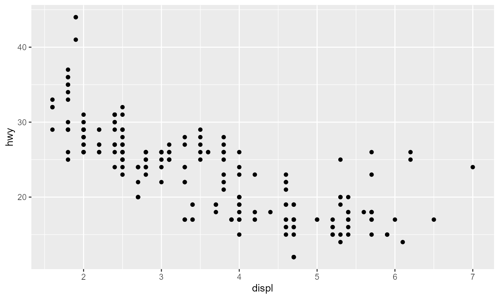
这些离群的红点什么类型的汽车呢？
为了解决这个问题，我们可以引入第三个变量，并通过把它映射到某一图形属性（
aesthetic）图形属性包括点的大小、形状、颜色等等。不同的数值可以映射成不同的属性级别（
level）


分面（Facests）
- 除了图形属性外，分面也可以很好的展示不同类型的变量
-
ggplot中使用facet_*函数来进行分面 - 如果我们按照
class进行分面:
ggplot(data = mpg) + geom_point(mapping = aes(x = displ, y = hwy)) + facet_wrap(~ class, nrow = 2)
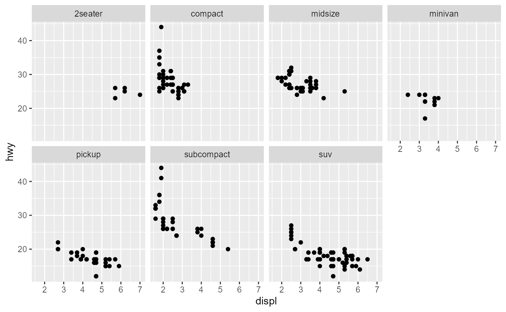
- 同样，我们可以对驱动方式和气缸数量进行分面(
facet_gird())
ggplot(data = mpg) + geom_point(mapping = aes(x = displ, y = hwy)) + facet_grid(drv ~ cyl)

图形几何对象（Geometric objects）
什么是几何对象


- 以上两幅图的x轴相同，y轴也相同，所描述的数据也相同，但是两幅图存在明显差异
- 每幅图使用了不同的几何对象（Geometric objects）来描述
- 在
ggplot2的语法中，我们可以说这两幅图用了不同的geoms
Geoms (geom_*)
- 在
ggplot2中，一个geom指的是用来描述数据的一种几何对象 - 不同的
geom就代表了不同类型的图 - 在
ggplot2中替换几何对象十分方便，只需要替换你加到ggplot()的geom函数，比如上图：
# left ggplot(data = mpg) + geom_point(mapping = aes(x = displ, y = hwy)) # right ggplot(data = mpg) + geom_smooth(mapping = aes(x = displ, y = hwy))
-
ggplot2自带了40多种geoms（还记得怎么查看吗，Hint:apropos）
#> [1] "geom_abline" "geom_area" "geom_bar"
#> [4] "geom_bin2d" "geom_blank" "geom_boxplot"
#> [7] "geom_col" "geom_contour" "geom_contour_filled"
#> [10] "geom_count" "geom_crossbar" "geom_curve"
#> [13] "geom_density" "geom_density_2d" "geom_density_2d_filled"
#> [16] "geom_density2d" "geom_density2d_filled" "geom_dotplot"
#> [19] "geom_errorbar" "geom_errorbarh" "geom_freqpoly"
#> [22] "geom_function" "geom_hex" "geom_histogram"
#> [25] "geom_hline" "geom_jitter" "geom_label"
#> [28] "geom_line" "geom_linerange" "geom_map"
#> [31] "geom_path" "geom_point" "geom_pointrange"
#> [34] "geom_polygon" "geom_qq" "geom_qq_line"
#> [37] "geom_quantile" "geom_raster" "geom_rect"
#> [40] "geom_ribbon" "geom_rug" "geom_segment"
#> [43] "geom_sf" "geom_sf_label" "geom_sf_text"
#> [46] "geom_smooth" "geom_spoke" "geom_step"
#> [49] "geom_text" "geom_tile" "geom_violin"
#> [52] "geom_vline"
Geoms (分组)
如果要分组展示不同的数据，怎么办
- 你可以在
aes()中使用group参数 - 将
group设置为你想要的的分类变量即可
ggplot(data = mpg) + geom_smooth(mapping = aes(x = displ, y = hwy, group = drv))

在ggplot2中展示多个geoms
- 如果要在一张图中展示多个
geoms怎么办？ - 可以将多个
geom_*()函数用+连接
ggplot(data = mpg) + geom_point(mapping = aes(x = displ, y = hwy)) + geom_smooth(mapping = aes(x = displ, y = hwy))

mapping继承
- 考虑一下刚刚那段代码：
ggplot(data = mpg) + geom_point(mapping = aes(x = displ, y = hwy)) + geom_smooth(mapping = aes(x = displ, y = hwy))
我们在
geom_point和geom_smooth中分别指定了mapping，但是它们实际上是一样的为了简化代码，我们可以将一系列相同的的
mapping传递给ggplot()，而后续增加的geom_*()会继承这些参数，除非你重新指定：
ggplot(data = mpg, mapping = aes(x = displ, y = hwy)) + geom_point(aes(color = class)) + geom_smooth()
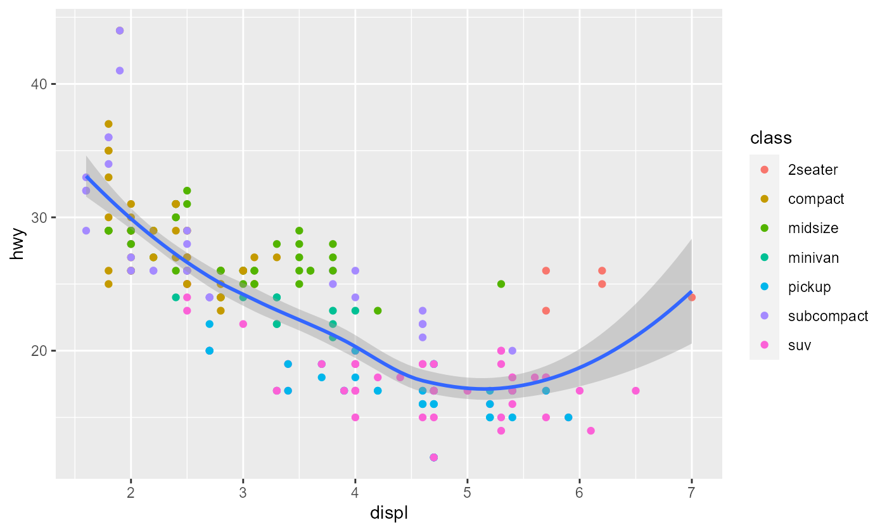 - 在geom_*()指定的mapping只会影响当前的geom行为
data继承
- 除了
mapping参数可以继承外，data也是可以继承的 - 如果你不指定新的
data，所有后续的geom_*()都会继承相同的data - 你可以在不同
geom_*()使用不同的data - 在
geom_*()指定的data只会影响当前的geom行为
ggplot(data = mpg, mapping = aes(x = displ, y = hwy)) + geom_point(mapping = aes(color = class)) + geom_smooth(data = filter(mpg, class == "subcompact"), se = FALSE)
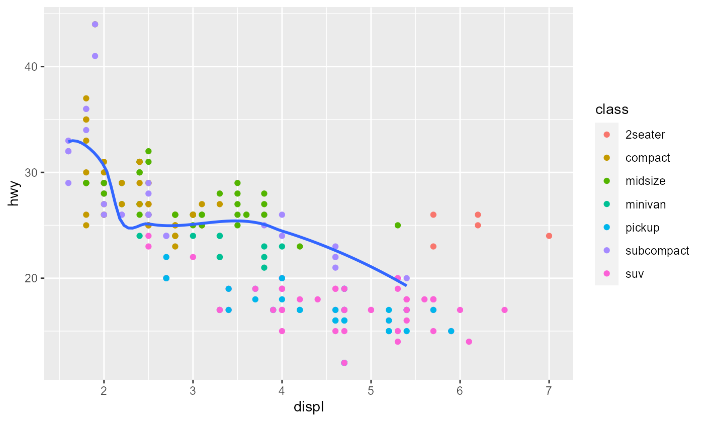
统计变换
什么是统计变换
- 柱形图(
geom_bar())
ggplot(data = diamonds) + geom_bar(mapping = aes(x = cut))

- 柱形图和之前的散点图有什么区别？
- 很多图形，如散点图，展示的数据本身，而有些图形，如柱形图，会计算新的变量并展示：
- 柱形图、直方图等默认会将数据分组（bin）并统计每组内的数据数量
- 平滑线会用模型拟合你的数据并展示预测数据
- 箱形会统计数据分布并展示
stat_*()
-
ggplot2中用来进行统计变换的函数为stat_*() - 下图展示了
geom_bar()通过stat_count()进行统计变换的流程

- 运行
?geom_bar来查看其可以计算的统计量 - 你可以任意使用
stat_*()和geom_*()来绘制相同的图形
ggplot(data = diamonds) + stat_count(mapping = aes(x = cut))
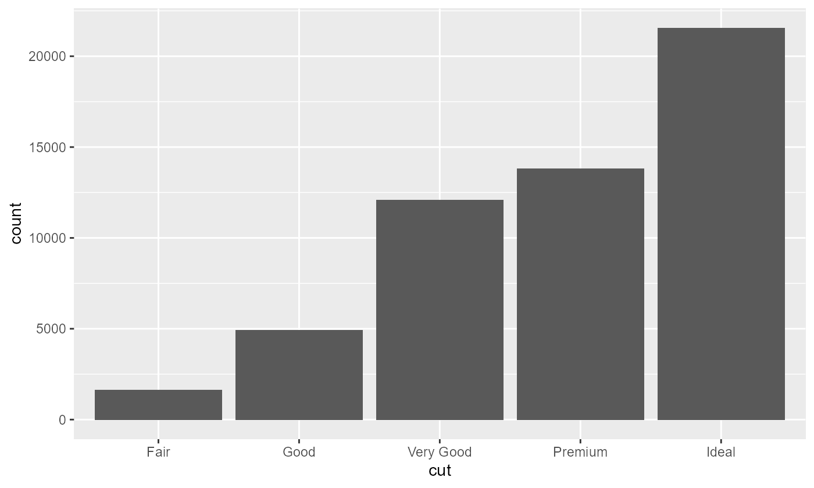
- 每种
geom都有一个默认的stat，每种stat也都对应一个默认的geom
改变默认的统计变换
- 假设你有如下一组数据：
#> # A tibble: 5 x 2
#> cut freq
#> <chr> <dbl>
#> 1 Fair 1610
#> 2 Good 4906
#> 3 Very Good 12082
#> 4 Premium 13791
#> 5 Ideal 21551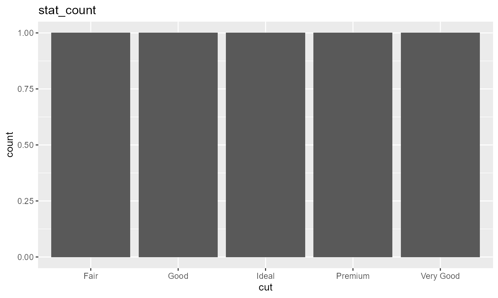
- 如何得到每种类别所占的比例？(
prop) vignette("ggplot2-specs")?geom_bar
ggplot(data = diamonds) + geom_bar(mapping = aes(x = cut, y = ..prop.., group = 1))
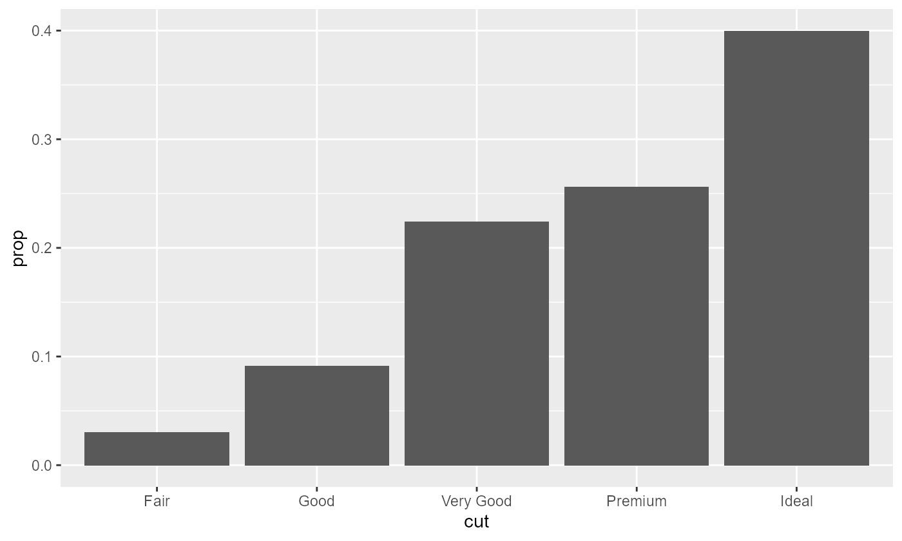
更复杂的统计
-
ggplot2提供了30种统计变换函数：
#> [1] "stat_bin" "stat_bin_2d" "stat_bin_hex"
#> [4] "stat_bin2d" "stat_binhex" "stat_boxplot"
#> [7] "stat_contour" "stat_contour_filled" "stat_count"
#> [10] "stat_density" "stat_density_2d" "stat_density_2d_filled"
#> [13] "stat_density2d" "stat_density2d_filled" "stat_ecdf"
#> [16] "stat_ellipse" "stat_function" "stat_identity"
#> [19] "stat_qq" "stat_qq_line" "stat_quantile"
#> [22] "stat_sf" "stat_sf_coordinates" "stat_smooth"
#> [25] "stat_spoke" "stat_sum" "stat_summary"
#> [28] "stat_summary_2d" "stat_summary_bin" "stat_summary_hex"
#> [31] "stat_summary2d" "stat_unique" "stat_ydensity"-
stat_summary()描述每个x对应的y特征
ggplot(data = diamonds) + stat_summary( mapping = aes(x = cut, y = depth), fun.ymin = min, fun.ymax = max, fun.y = median )

图形位置（position_*）
如何调整图形的位置
- 如何展示不同clarity的钻石在不同cut中数量？
ggplot(data = diamonds) + geom_bar(mapping = aes(x = cut, fill = clarity), position = 'stack')

- 如果你不想要堆积（stack）柱状图，你可以尝试以下4种位置参数：
position = 'fill'position = 'dodge'position = 'dodge2'position = 'identity'
 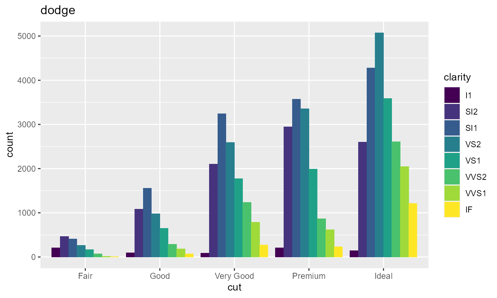
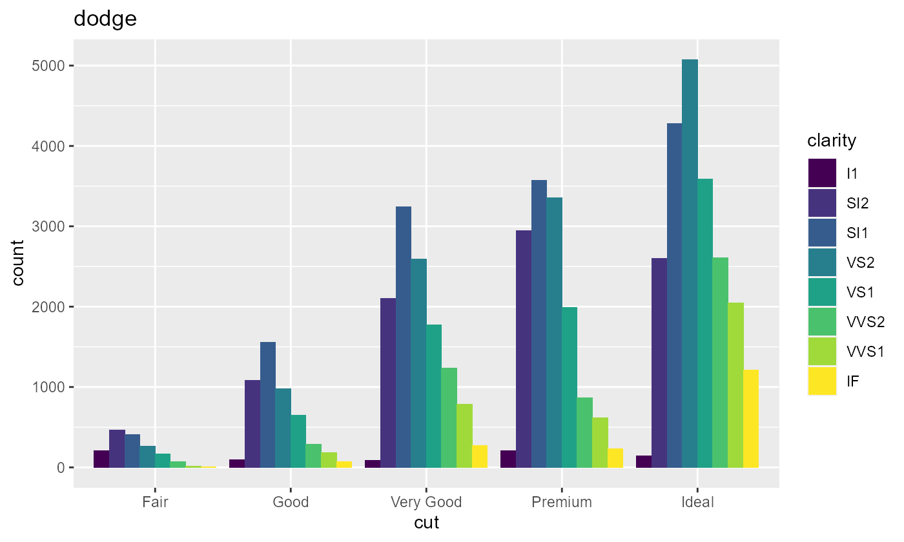
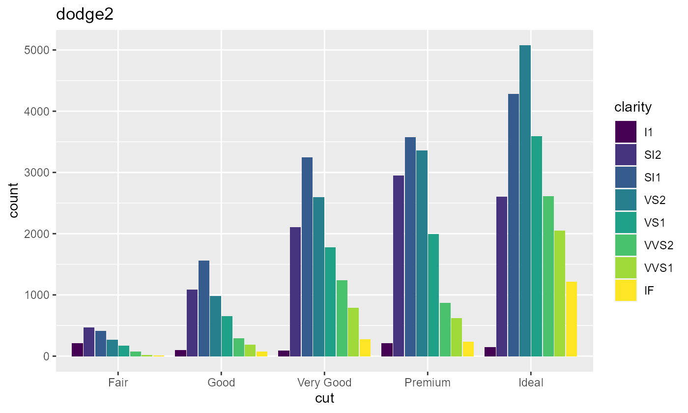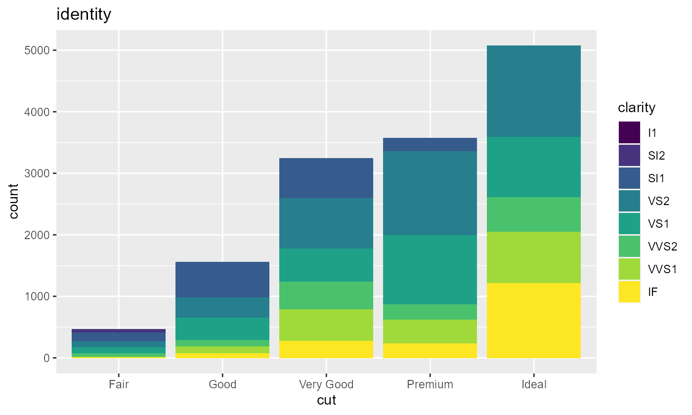

坐标系统 (coord_*)
什么是坐标系统
坐标系统是
ggplot2中最为复杂的组件ggplot2中的坐标系统通过coord_*函数进行控制ggplot2中提供的坐标系统有：
#> [1] "coord_cartesian" "coord_equal" "coord_fixed" "coord_flip"
#> [5] "coord_map" "coord_munch" "coord_polar" "coord_quickmap"
#> [9] "coord_sf" "coord_trans"默认的坐标系为笛卡尔坐标系coord_cartesian()
coord_flip()
-
coord_flip()用来翻转x和y轴
ggplot(data = mpg, mapping = aes(x = class, y = hwy)) + geom_boxplot() ggplot(data = mpg, mapping = aes(x = class, y = hwy)) + geom_boxplot() + coord_flip()
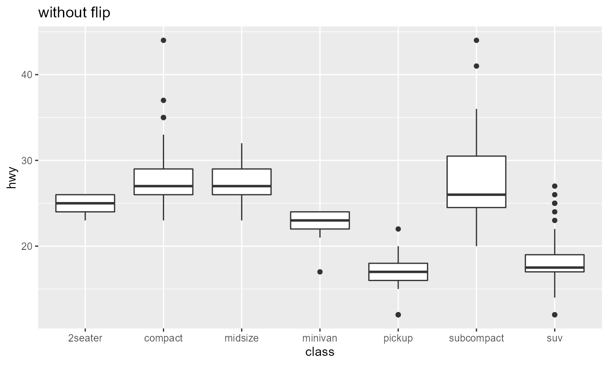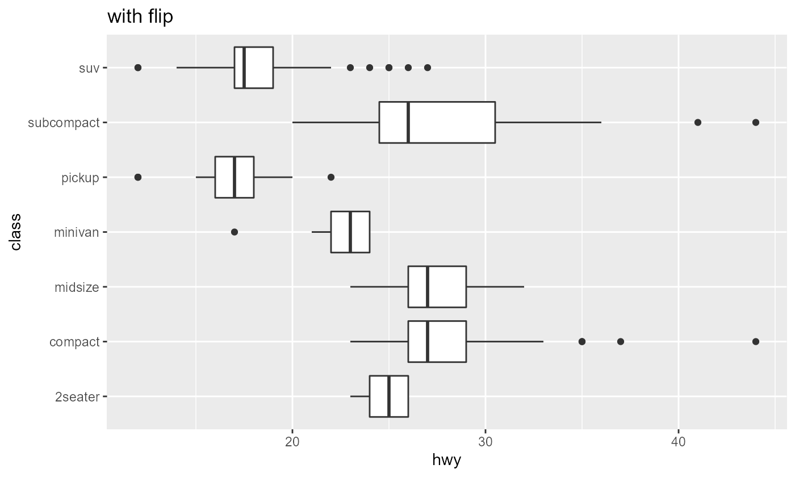
coord_quickmap()
-
coord_quickmap()可以用来展示空间数据，如地图等，会自动调整x轴和y轴的比例
nz <- map_data("nz") ggplot(nz, aes(long, lat, group = group)) + geom_polygon(fill = "white", colour = "black") ggplot(nz, aes(long, lat, group = group)) + geom_polygon(fill = "white", colour = "black") + coord_quickmap()
 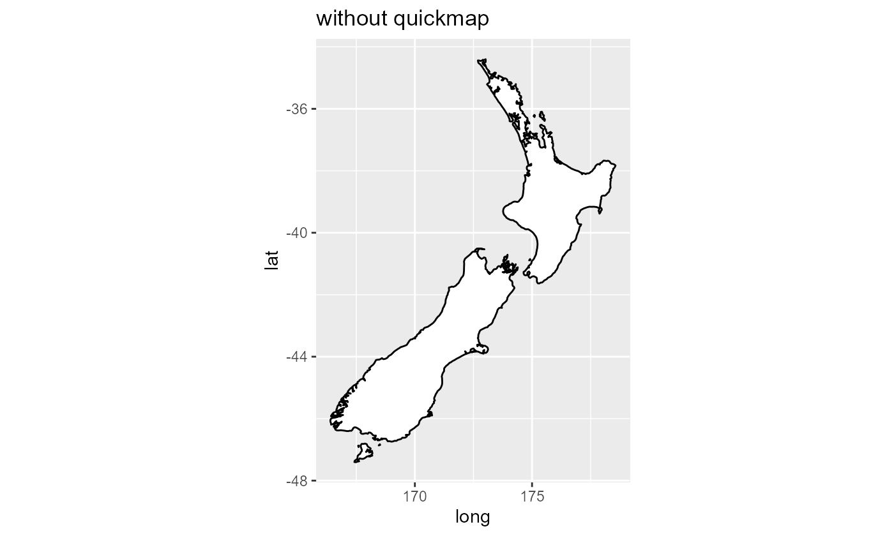
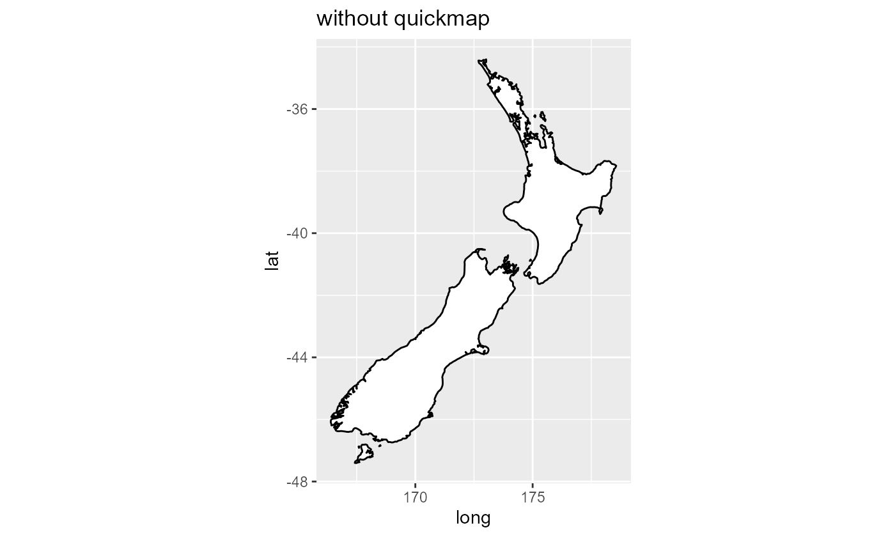
coord_polar()
-
coord_polar()用来画极坐标
bar <- ggplot(data = diamonds) + geom_bar( mapping = aes(x = cut, fill = cut), show.legend = FALSE, width = 1 ) + theme(aspect.ratio = 1) + labs(x = NULL, y = NULL) bar + coord_flip() bar + coord_polar()
 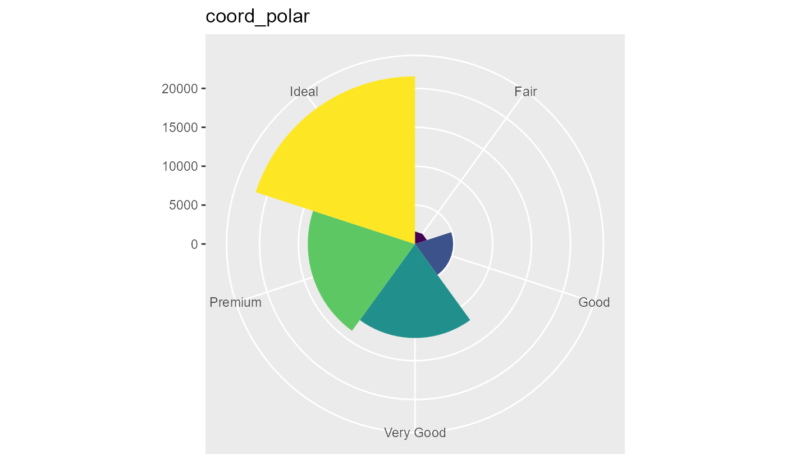
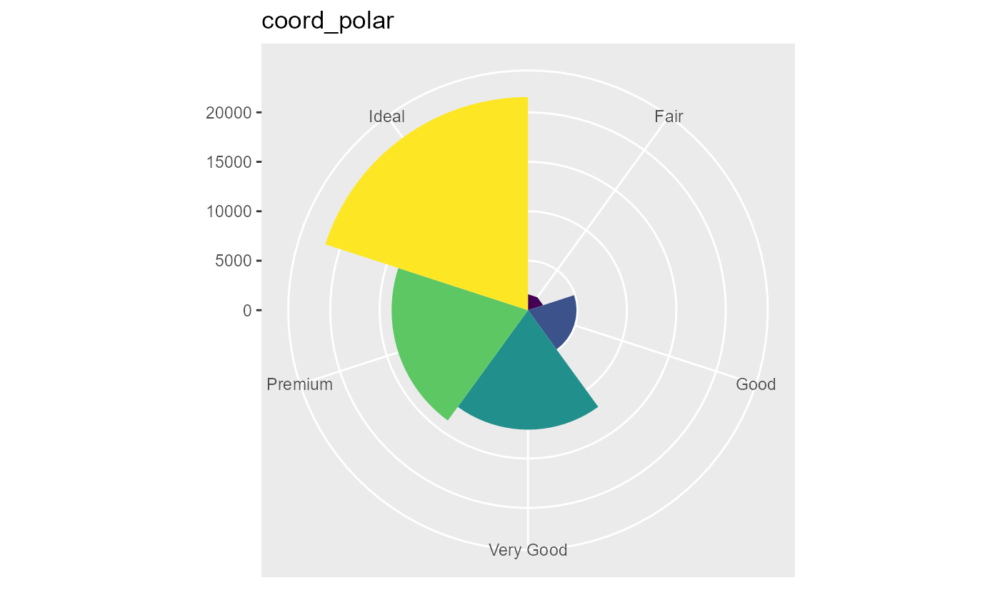
标度系统
什么是标度系统
- 标度系统是一组将数据空间转换成几何空间的函数
-
ggplot2中提供了一系列标度函数，均以scale_开头 - 默认的标度函数有：
#> [1] "scale_alpha" "scale_alpha_binned"
#> [3] "scale_alpha_continuous" "scale_alpha_date"
#> [5] "scale_alpha_datetime" "scale_alpha_discrete"
#> [7] "scale_alpha_identity" "scale_alpha_manual"
#> [9] "scale_alpha_ordinal" "scale_color_binned"
#> [11] "scale_color_brewer" "scale_color_continuous"
#> [13] "scale_color_date" "scale_color_datetime"
#> [15] "scale_color_discrete" "scale_color_distiller"
#> [17] "scale_color_fermenter" "scale_color_gradient"
#> [19] "scale_color_gradient2" "scale_color_gradientn"
#> [21] "scale_color_grey" "scale_color_hue"
#> [23] "scale_color_identity" "scale_color_manual"
#> [25] "scale_color_ordinal" "scale_color_steps"
#> [27] "scale_color_steps2" "scale_color_stepsn"
#> [29] "scale_color_viridis_c" "scale_color_viridis_d"
#> [31] "scale_colour_binned" "scale_colour_brewer"
#> [33] "scale_colour_continuous" "scale_colour_date"
#> [35] "scale_colour_datetime" "scale_colour_discrete"
#> [37] "scale_colour_distiller" "scale_colour_fermenter"
#> [39] "scale_colour_gradient" "scale_colour_gradient2"
#> [41] "scale_colour_gradientn" "scale_colour_grey"
#> [43] "scale_colour_hue" "scale_colour_identity"
#> [45] "scale_colour_manual" "scale_colour_ordinal"
#> [47] "scale_colour_steps" "scale_colour_steps2"
#> [49] "scale_colour_stepsn" "scale_colour_viridis_b"默认标度
当你写下：
ggplot(mpg, aes(displ, hwy)) + geom_point(aes(colour = class))
实际上ggplot2会帮你添加一系列默认的标度函数：
ggplot(mpg, aes(displ, hwy)) + geom_point(aes(colour = class)) + scale_x_continuous() + scale_y_continuous() + scale_colour_discrete()
调整默认标度
你可以通过改变标度函数中的默认值来改变标度函数，如：
ggplot(mpg, aes(displ, hwy)) + geom_point() + scale_x_continuous("Label 2")
你也可以更换使用不同的标度函数，如：
ggplot(mpg, aes(displ, hwy)) + geom_point(aes(colour = class)) + scale_x_sqrt() + scale_colour_brewer()
图例
-
ggplot2中图例和坐标轴统称为guides

- 可以采用
guide_legend()来修改图例的样式和内容
base <- ggplot(mpg, aes(drv, fill = factor(cyl))) + geom_bar() base base + guides(fill = guide_legend(ncol = 2)) base + guides(fill = guide_legend(ncol = 2, byrow = TRUE))
override.aes
- 当你的图例需要和图中显示不一样的时候，
override.aes很有用！
base <- ggplot(mpg, aes(displ, hwy, colour = drv)) + geom_point(size = 4, alpha = .2, stroke = 0) base + guides(colour = guide_legend()) base + guides(colour = guide_legend(override.aes = list(alpha = 1)))


主题
theme()
- 主题可以用来调整图中的非数据元素（如：标题、标签、字体、背景、图例等等）
-
ggplot提供了一系列内置的主题函数 - 可以使用
theme()函数来自定义自己的主题 - 有大量的第三方包提供了精美的配色主题
#> function (line, rect, text, title, aspect.ratio, axis.title,
#> axis.title.x, axis.title.x.top, axis.title.x.bottom, axis.title.y,
#> axis.title.y.left, axis.title.y.right, axis.text, axis.text.x,
#> axis.text.x.top, axis.text.x.bottom, axis.text.y, axis.text.y.left,
#> axis.text.y.right, axis.ticks, axis.ticks.x, axis.ticks.x.top,
#> axis.ticks.x.bottom, axis.ticks.y, axis.ticks.y.left, axis.ticks.y.right,
#> axis.ticks.length, axis.ticks.length.x, axis.ticks.length.x.top,
#> axis.ticks.length.x.bottom, axis.ticks.length.y, axis.ticks.length.y.left,
#> axis.ticks.length.y.right, axis.line, axis.line.x, axis.line.x.top,
#> axis.line.x.bottom, axis.line.y, axis.line.y.left, axis.line.y.right,
#> legend.background, legend.margin, legend.spacing, legend.spacing.x,
#> legend.spacing.y, legend.key, legend.key.size, legend.key.height,
#> legend.key.width, legend.text, legend.text.align, legend.title,
#> legend.title.align, legend.position, legend.direction, legend.justification,
#> legend.box, legend.box.just, legend.box.margin, legend.box.background,
#> legend.box.spacing, panel.background, panel.border, panel.spacing,
#> panel.spacing.x, panel.spacing.y, panel.grid, panel.grid.major,
#> panel.grid.minor, panel.grid.major.x, panel.grid.major.y,
#> panel.grid.minor.x, panel.grid.minor.y, panel.ontop, plot.background,
#> plot.title, plot.title.position, plot.subtitle, plot.caption,
#> plot.caption.position, plot.tag, plot.tag.position, plot.margin,
#> strip.background, strip.background.x, strip.background.y,
#> strip.placement, strip.text, strip.text.x, strip.text.y,
#> strip.switch.pad.grid, strip.switch.pad.wrap, ..., complete = FALSE,
#> validate = TRUE)
#> NULL


 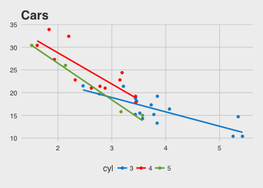
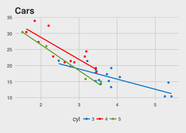


 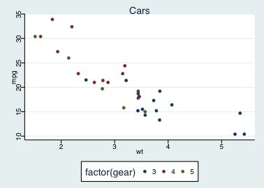 # 总结
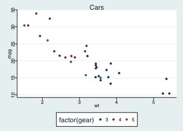 # 总结 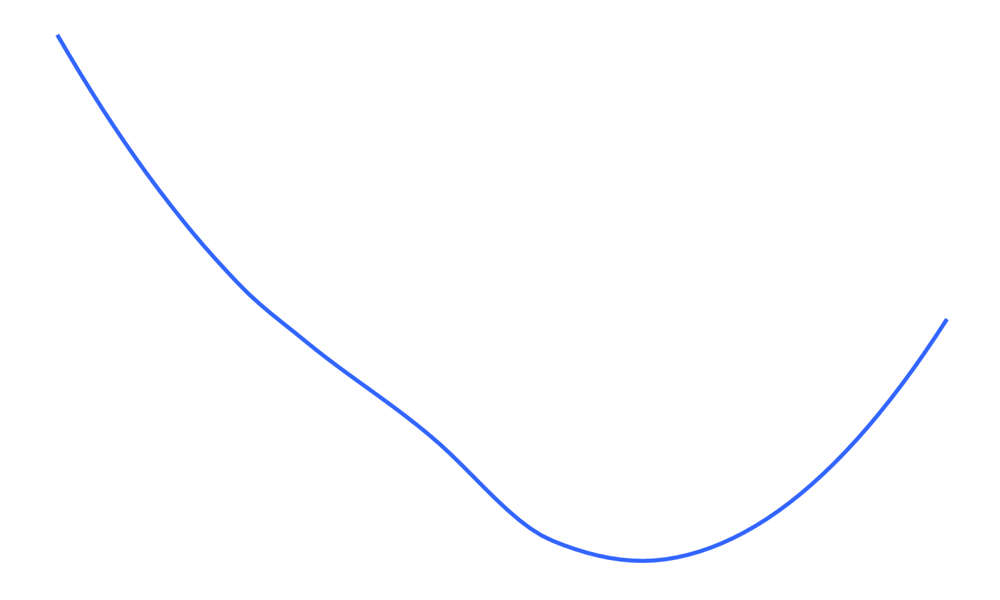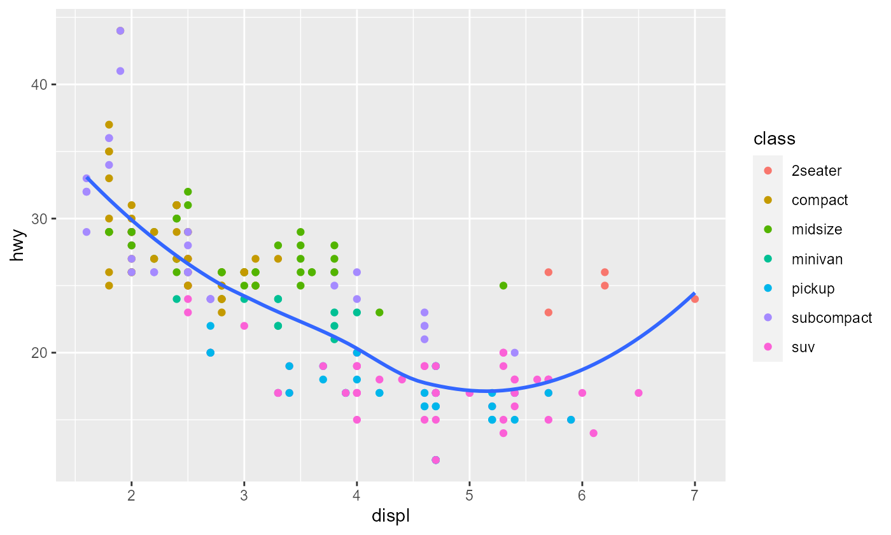
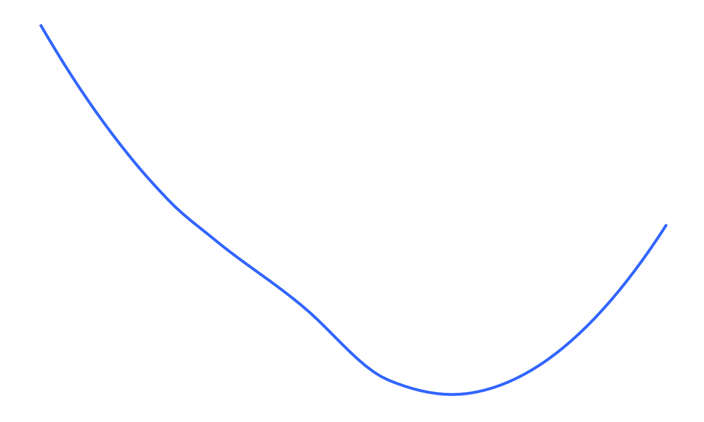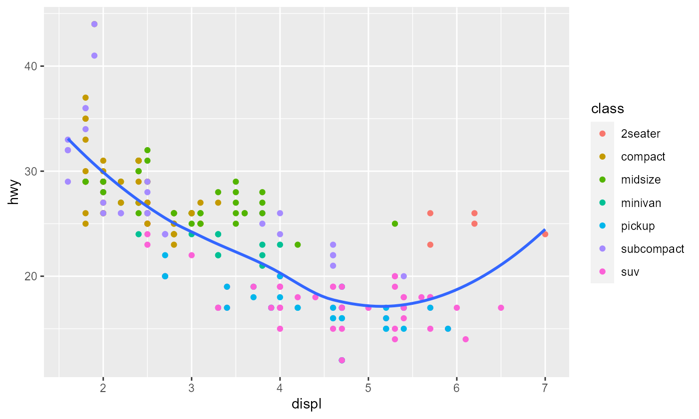进阶绘图技巧
patchwork多图组合
要在R中实现一页放多个图，一般使用gridExtra包中的grid.arrange函数或者cowplot包中的plot_grid函数，但是近日Thomas Lin Pedersen又出新作，颠覆了在ggplot2乃至基本包中实现一页多图的最佳方案

patchwork基本用法
patchwork的使用非常简单，只需要将你需要组合的图像用+连接。
library(ggplot2) library(patchwork) p1 <- ggplot(mtcars) + geom_point(aes(mpg, disp)) p2 <- ggplot(mtcars) + geom_boxplot(aes(gear, disp, group = gear)) p1 + p2
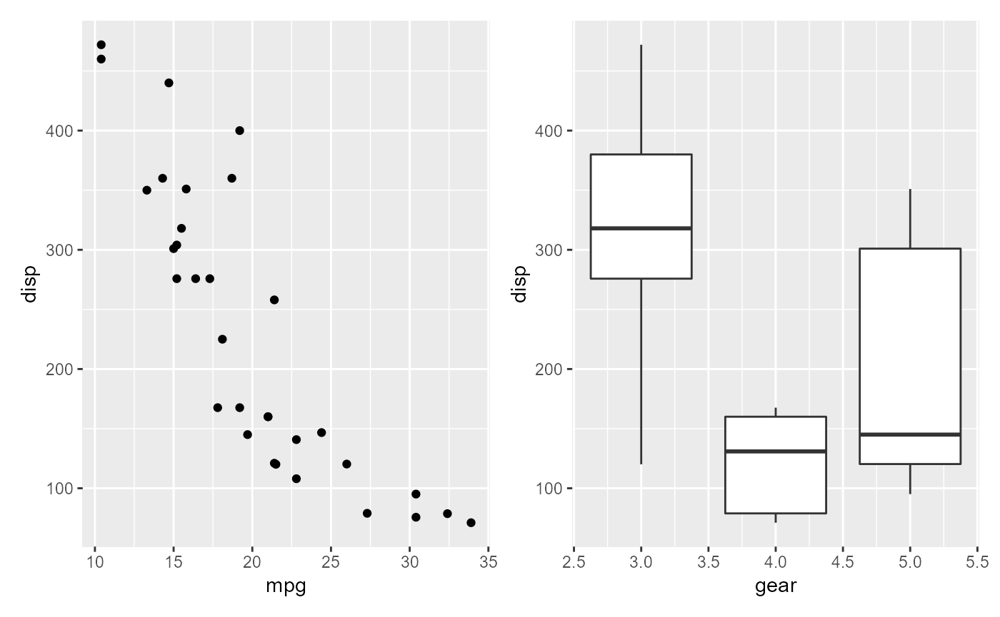
patchwork进阶排版
patchwork为任意复杂的布局提供了丰富的支持。请看这个非常易读的代码，它将三个图形嵌套在第四个图形之上:
p3 <- ggplot(mtcars) + geom_smooth(aes(disp, qsec)) p4 <- ggplot(mtcars) + geom_bar(aes(carb)) (p1 | p2 | p3) / p4
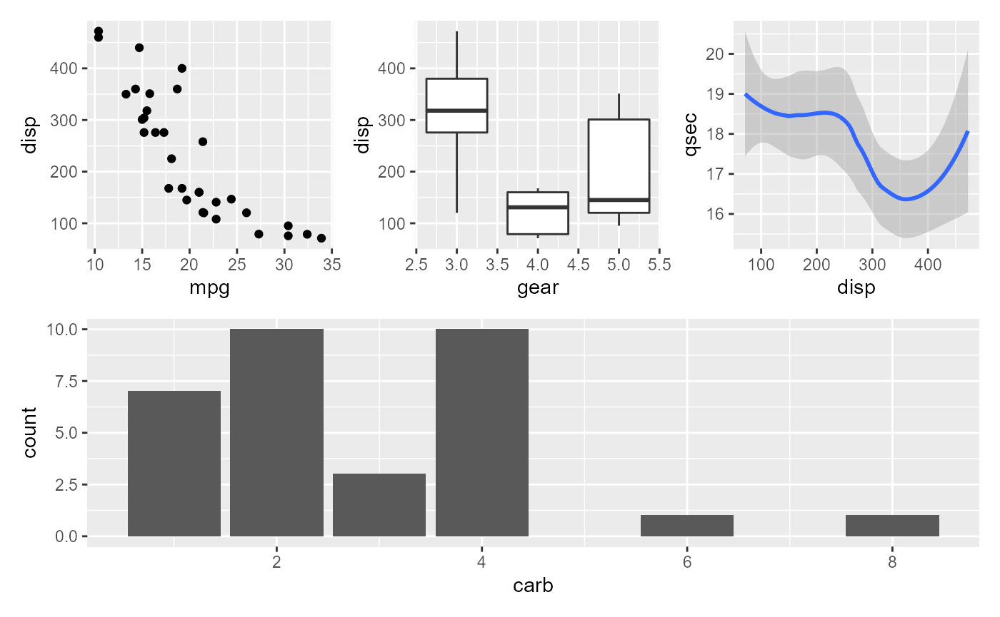
patchwork个性化
标题
patchwork <- (p1 + p2) / p3 patchwork + plot_annotation( title = 'The surprising truth about mtcars', subtitle = 'These 3 plots will reveal yet-untold secrets about our beloved data-set', caption = 'Disclaimer: None of these plots are insightful' )
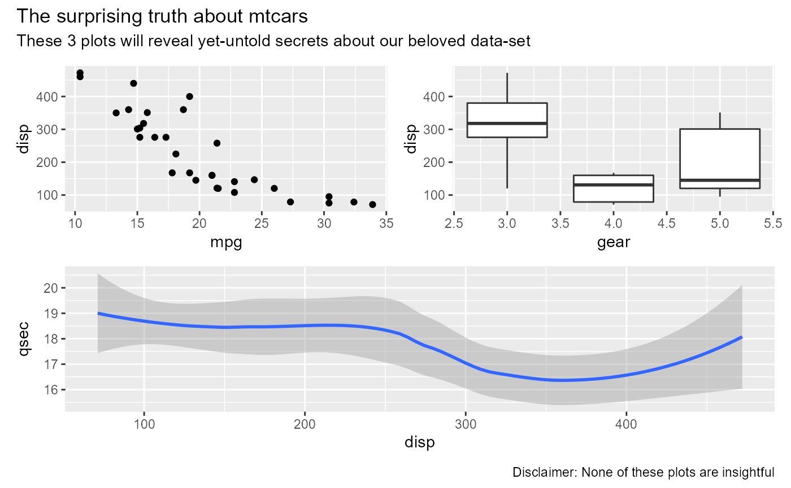